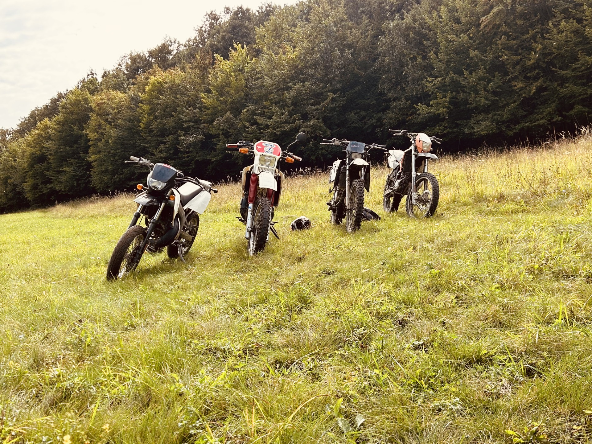

Eddigi életem során rengetek dolgot ki próbáltam, de ezek közül az első a motorozás/quadozás, első quadomat nagyapámtól kaptam 5 éves koromban ez megalapozta a későbbi érdeklődésemet e hobby iránt. 10 éves lehettem amikor meg kaptam első krossz motoromat, ez már váltós volt szóval ezzel volt mit gyakorolni.
14 voltam amikor meg csináltam 50ccm- es motorra a jogosítványt. Jelenleg egy derbi senda supermotom van amit közúton használok, de a nyáron tervezek egy nagy köbcentis motort vásárolni amit viszont már ednurora fogok használni.
A motorozáson kívül régen úsztam, lovagoltam, fociztam. De sajnos ezek a sportokat már abba hagytam.